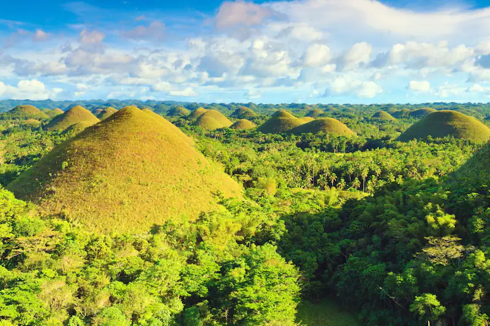

B O H O L

Bohol is a province of the Philippines, in the country’s Central Visayas region. It comprises Bohol Island and numerous smaller surrounding islands. Bohol is known for coral reefs and unusual geological formations, notably the Chocolate Hills. On the main island, near the town of Carmen, these 1,200 or so symmetrical mounds turn cocoa-brown in the dry season, contrasting with the surrounding jungle's greenery
The province of Bohol is a first-class province divided into 3 congressional districts, comprising 1 component city and 47 municipalities. It has 1,109 barangays.
The province is a popular tourist destination with its beaches and resorts. The Chocolate Hills, numerous mounds of brown-colored limestone formations, are the most popular attraction. The formations can be seen by land (climbing the highest point) or by air via ultralight air tours. Panglao Island, located just southwest of Tagbilaran, is famous for its diving locations and is routinely listed as one of the top ten diving locations in the world. Numerous tourist resorts and dive centers dot the southern beaches. The Philippine tarsier, among the world's smallest primates, is indigenous to the island.
It was the home province of Carlos P. Garcia, the eighth president of the Republic of the Philippines (1957–1961) who was born in Talibon, Bohol.
On October 15, 2013, Bohol was devastated by a 7.2 magnitude earthquake whose epicenter was 6 km (3.7 mi) south of Sagbayan. The earthquake, which also hit southern Cebu, claimed 222 lives altogether and injured 374 people. It also destroyed or damaged a number of Bohol's heritage churches.
In 2017, the provincial government began initiating the nomination of the entire province to the UNESCO Global Geoparks Network.